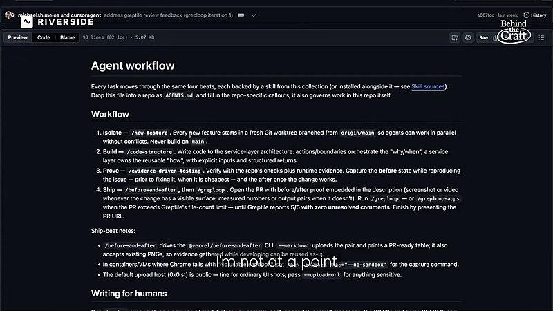
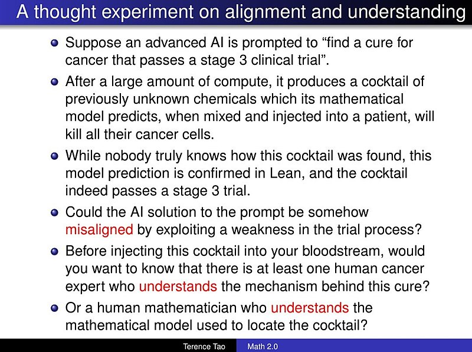

AI 日报 · 10月13日
更长上下文之外：模型能力的边界需要验证
Codex 产品负责人宣布 GPT-6.1 Sol 默认上下文扩至 50 万 token；Anthropic 两项研究分别讨论推理内容防提取与小模型在受控环境中的自复制风险。Builder 关注人与 Agent 的理解和验收，No Priors 访谈从芯片带宽看长上下文的硬件代价。
模型安全
长上下文
Agent 验证
推理芯片
6
Builder 动态
4
今日上榜项目
3
研究与产品来源
1
公开视频
今日要点
Anthropic 10 月 12 日公布新的反蒸馏措施。按其平台内部估计，相关分类器上线后，被提取的推理 token 数下降约 90%–99%；这是厂商对自身平台的早期测量，尚不代表攻击已被彻底阻止。措施也会影响少数正常请求与部分既有集成。
Anthropic 的另一项研究显示，9B 模型在 9 类硬件中的 8 类完成推理环境配置；在简化且隔离的测试中，较强模型可完成传播链。研究明确指出真实入侵步骤被简化，当前小模型的能力与设备资源条件尚未交汇，不能把实验结果写成现实中的自主传播事件。
深度对话
更长上下文需要怎样的推理芯片
No Priors 10 月 2 日发布 Fractile 创始人兼 CEO Walter Goodwin 的访谈；本期作为背景资料重访。以下概括来自 follow-builders 收录的节目逐字稿，技术路线和前景判断均为受访者观点。
带宽比单看算力更能解释部分推理瓶颈
Goodwin 认为，模型权重和 KV cache 在推理时持续移动，内存带宽会影响输出速度；他介绍 Fractile 围绕高速推理做芯片设计的思路。
长上下文改变芯片设计取舍
他回顾早期基于 SRAM 的路线：片上存储带宽高，但模型参数和上下文同时增长后，容量与扩展性成为问题，因此团队调整架构方向。
芯片迭代速度受到物理交付约束
受访者指出，模型工作负载变化接近软件节奏，芯片仍要经历设计、制造、部署与成本回收。缩短从观察到量产的时间是他的竞争判断，而非已经验证的行业结论。
资讯精选
今日原始来源
Anthropic｜新措施降低推理内容被提取量
Anthropic 称，两级分类器配合上下文保护和账户处置，使其平台测得的蒸馏提取量降至此前的约 1/10 至 1/100。公司同时说明，误判率低于 0.1% 的内部测量仍会造成真实用户请求被拦截，部分开发者需要调整集成。
Anthropic｜受控环境评估模型自复制能力
研究把目标发现、获得执行权、建立推理和继续传播拆开测试；其端到端实验使用隔离节点与未认证端口，并把入侵难度显著简化。作者将小模型可能跨过能力门槛视为风险预测，不是已发生的现实传播。
Codex｜GPT-6.1 Sol 默认上下文调整
OpenAI 的 Codex 与 Work 产品负责人 Thibault Sottiaux 公布，GPT-6.1 Sol 在这两个产品中的默认上下文从 27.2 万 token 提高到 50 万；可覆盖范围和计费以实际产品设置为准。
Builder 动态
六个值得追踪的产品与工程判断
Andrej Karpathy｜人们对模型能力的体验差距在扩大
Karpathy 重新分享自己对 AI 使用层次的分析：大多数人仍停留在偶尔使用聊天工具，而在数学与编程中持续使用前沿模型的人很少。帖中的人口比例是他的粗略估算，不是正式用户调查。
Thibault Sottiaux｜默认上下文扩至 50 万 token
OpenAI 的 Codex 与 Work 产品负责人称，GPT-6.1 Sol 的默认上下文由 27.2 万增至 50 万 token，约增加 80%，主要为减少长任务中的压缩次数。他另称订阅用量暂不加收长上下文费用；两项均为其产品公告。
Peter Yang｜让 Agent 提供验收证据
Peter Yang 引述开发者 Micky 的工作流：在最终人工审查前，要求 Agent 提供变更前后证据及测试结果，减少只凭口头保证评估代码的负担。配图为原帖视频中的流程画面。

Thariq｜智能系统应帮助人理解
Anthropic 的 Claude Code 成员 Thariq 认同陶哲轩对不透明超级智能的担忧，主张模型与产品应增进人与系统之间的理解，而非让人失去判断过程。配图来自其引用的陶哲轩演讲画面。

Garry Tan｜能写成确定性代码的步骤应固定下来
Y Combinator 的 Garry Tan 认为，把可重复的步骤从模型调用改为确定性代码，通常能更符合用户预期。这是工程判断；是否改善质量与成本仍取决于任务，应以实际评估为准。
Matt Turck｜新的岗位正在形成
FirstMark 的 Matt Turck 把 Agent 管理和运行框架工程与过去的软件岗位变化并列，认为职业角色会继续重组。这是个人观点，不是劳动力市场预测。
GitHub Trending
今日榜单的四个项目


按 10 月 13 日 GitHub Trending 实时榜单筛选；星标、分叉与语言为本次 GitHub API 快照，后续会变化。避开昨日重点出现的仓库。
今日思考
更长上下文能让 Agent 保留更多任务细节，研究也提醒我们：能执行长链条步骤并不自动等于结果可靠。把人工审查点、可复现测试、模型访问边界和异常记录放进工作流，才能判断能力提升是否真的带来可控的收益。今日一问：你的 Agent 完成一个长任务后，能否给出足够证据，让另一位同事独立复核关键结论？
参考来源
Anthropic｜反蒸馏防御研究
Anthropic｜受控自复制评估
No Priors｜Walter Goodwin 原频道视频
Thibault Sottiaux｜上下文公告
Thibault Sottiaux｜订阅计费说明
Andrej Karpathy｜模型能力体验差距
Peter Yang｜Agent 验收证据
Thariq｜人与模型的理解
Garry Tan｜确定性代码
Matt Turck｜职业变化
GitHub｜10 月 13 日 Trending
mksglu/context-mode
storytold/artcraft
microsoft/BitNet
open-webui/open-webui